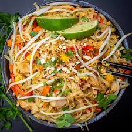

Pad Thai

Description
Pad Thai is one of my all time favourite quick weeknight dinners. Flavourful, nutritious and only requiring a handful of ingredients - what more could you ask for!
While many Pad Thai recipes call for tomato paste, ketchup, and other ingredients to add in tangy flavour and orange colour, this recipe uses the traditionally correct ingredient of tamarind paste. Tamarind can be challenging to find at times in Canadian grocery stores, so I always try to keep a stockpile of tamarind paste in the freezer. This is a vegetarian recipe, so the fish sauce that would be traditionally used has been substituted with shitaake powder and soy sauce. I have found this combination to add a great umami flavour to the finished dish!
Ingredients
Sauce Ingredients
- 4-6 tbsp tamarind paste
- 3-4 tbsp soy sauce
- 2 tsp shitaake powder
- 2 tbsp sugar
- 1/4 cup water
Remaining ingredients
- rice stick noodles
- tofu and preferred vegetables
- 2 cloves of garlic
- 1/2 of small red onion or 1 shallot
- 2 eggs
- bean sprouts and green onion to taste
- 1/2 cup chopped roasted peanuts
- 1-2 tbsp neutral flavour oil
- 1 lime, cut into wedges
Steps
- Soak rice noodles in hot water until ready to use
- To make the sauce, combine water and sugar and microwave until dissolved. Add remaining ingredients and stir
- On high heat, saute onion, garlic, tofu and vegetables. Once done, push everything to the side of the pan and scramble eggs
- Add noodles to the pan with vegetables, tofu and eggs
- Add sauce ingredients to the pan and simmer briefly
- Add sprouts and green onion to the pan
- Toss everything to combine
- Top with peanuts and lime wedge, and enjoy!